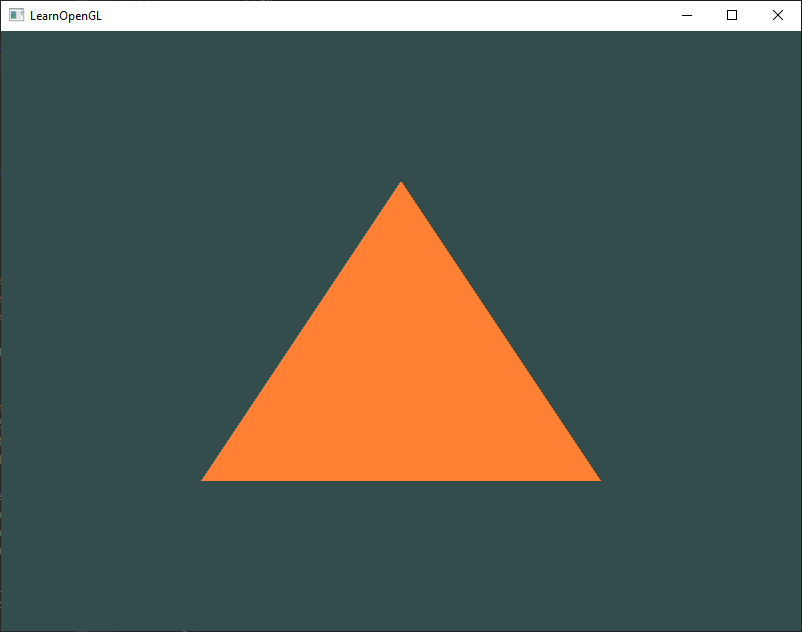

Hello Triangle
In OpenGL everything is in 3D space, but the screen or window is a 2D array of pixels so a large part of OpenGL's work is about transforming all 3D coordinates to 2D pixels that fit on your screen. The process of transforming 3D coordinates to 2D pixels is managed by the graphics pipeline of OpenGL. The graphics pipeline can be divided into two large parts: the first transforms your 3D coordinates into 2D coordinates and the second part transforms the 2D coordinates into actual colored pixels. In this chapter we'll briefly discuss the graphics pipeline and how we can use it to our advantage to create fancy pixels.
The graphics pipeline takes as input a set of 3D coordinates and transforms these to colored 2D pixels on your screen. The graphics pipeline can be divided into several steps where each step requires the output of the previous step as its input. All of these steps are highly specialized (they have one specific function) and can easily be executed in parallel. Because of their parallel nature, graphics cards of today have thousands of small processing cores to quickly process your data within the graphics pipeline. The processing cores run small programs on the GPU for each step of the pipeline. These small programs are called shaders.
Some of these shaders are configurable by the developer which allows us to write our own shaders to replace the existing default shaders. This gives us much more fine-grained control over specific parts of the pipeline and because they run on the GPU, they can also save us valuable CPU time. Shaders are written in the OpenGL Shading Language (GLSL) and we'll delve more into that in the next chapter.
Below you'll find an abstract representation of all the stages of the graphics pipeline. Note that the blue sections represent sections where we can inject our own shaders.

As you can see, the graphics pipeline contains a large number of sections that each handle one specific part of converting your vertex data to a fully rendered pixel. We will briefly explain each part of the pipeline in a simplified way to give you a good overview of how the pipeline operates.
Vertex input
To start drawing something we have to first give OpenGL some input vertex data. OpenGL is a 3D graphics library so all coordinates that we specify in OpenGL are in 3D (x, y and z coordinate). OpenGL doesn't simply transform all your 3D coordinates to 2D pixels on your screen; OpenGL only processes 3D coordinates when they're in a specific range between -1.0 and 1.0 on all 3 axes (x, y and z). All coordinates within this so called normalized device coordinates range will end up visible on your screen (and all coordinates outside this region won't).
Because we want to render a single triangle we want to specify a total of three vertices with each vertex having a 3D position. We define them in normalized device coordinates (the visible region of OpenGL) in a float array:
float vertices[] = {
0.5f, -0.5f, 0.0f,
0.5f, -0.5f, 0.0f,
0.0f, 0.5f, 0.0f
};
Normalized Device Coordinates (NDC)
Once your vertex coordinates have been processed in the vertex shader, they should be in normalized device coordinates which is a small space where the x, y and z values vary from -1.0 to 1.0. Any coordinates that fall outside this range will be discarded/clipped and won't be visible on your screen. Below you can see the triangle we specified within normalized device coordinates (ignoring the z axis):

Unlike usual screen coordinates the positive y-axis points in the up-direction and the (0,0) coordinates are at the center of the graph, instead of top-left. Eventually you want all the (transformed) coordinates to end up in this coordinate space, otherwise they won't be visible.
Your NDC coordinates will then be transformed to screen-space coordinates via the viewport transform using the data you provided with glViewport. The resulting screen-space coordinates are then transformed to fragments as inputs to your fragment shader.
Linking Vertex Attributes
The vertex shader allows us to specify any input we want in the form of vertex attributes and while this allows for great flexibility, it does mean we have to manually specify what part of our input data goes to which vertex attribute in the vertex shader. This means we have to specify how OpenGL should interpret the vertex data before rendering.
Our vertex buffer data is formatted as follows:

- The position data is stored as 32-bit (4 byte) floating point values.
- Each position is composed of 3 of those values.
- There is no space (or other values) between each set of 3 values. The values are tightly packed in the array.
- The first value in the data is at the beginning of the buffer.
Vertex Array Object
A vertex array object (also known as VAO) can be bound just like a vertex buffer object and any subsequent vertex attribute calls from that point on will be stored inside the VAO. This has the advantage that when configuring vertex attribute pointers you only have to make those calls once and whenever we want to draw the object, we can just bind the corresponding VAO. This makes switching between different vertex data and attribute configurations as easy as binding a different VAO. All the state we just set is stored inside the VAO.
A vertex array object stores the following:
- Calls to glEnableVertexAttribArray or glDisableVertexAttribArray.
- Vertex attribute configurations via glVertexAttribPointer.
- Vertex buffer objects associated with vertex attributes by calls to glVertexAttribPointer.

The triangle we've all been waiting for
To draw our objects of choice, OpenGL provides us with the glDrawArrays function that draws primitives using the currently active shader, the previously defined vertex attribute configuration and with the VBO's vertex data (indirectly bound via the VAO).
glUseProgram(shaderProgram);
glBindVertexArray(VAO);
glDrawArrays(GL_TRIANGLES, 0, 3);
The glDrawArrays function takes as its first argument the OpenGL primitive type we would like to draw. Since I said at the start we wanted to draw a triangle, and I don't like lying to you, we pass in GL_TRIANGLES. The second argument specifies the starting index of the vertex array we'd like to draw; we just leave this at 0. The last argument specifies how many vertices we want to draw, which is 3 (we only render 1 triangle from our data, which is exactly 3 vertices long).
Now try to compile the code and work your way backwards if any errors popped up. As soon as your application compiles, you should see the following result:
Element Buffer Objects
There is one last thing we'd like to discuss when rendering vertices and that is element buffer objects abbreviated to EBO. To explain how element buffer objects work it's best to give an example: suppose we want to draw a rectangle instead of a triangle. We can draw a rectangle using two triangles (OpenGL mainly works with triangles). This will generate the following set of vertices:
float vertices[] = {
// first triangle
0.5f, 0.5f, 0.0f, // top right
0.5f, -0.5f, 0.0f, // bottom right
-0.5f, 0.5f, 0.0f, // top left
// second triangle
0.5f, -0.5f, 0.0f, // bottom right
-0.5f, -0.5f, 0.0f, // bottom left
-0.5f, 0.5f, 0.0f // top left
};
The glDrawElements function takes its indices from the EBO currently bound to the GL_ELEMENT_ARRAY_BUFFER target. This means we have to bind the corresponding EBO each time we want to render an object with indices which again is a bit cumbersome. It just so happens that a vertex array object also keeps track of element buffer object bindings. The last element buffer object that gets bound while a VAO is bound, is stored as the VAO's element buffer object. Binding to a VAO then also automatically binds that EBO.

The resulting initialization and drawing code now looks something like this:
// ..:: Initialization code :: ..
// 1. bind Vertex Array Object
glBindVertexArray(VAO);
// 2. copy our vertices array in a vertex buffer for OpenGL to use
glBindBuffer(GL_ARRAY_BUFFER, VBO);
glBufferData(GL_ARRAY_BUFFER, sizeof(vertices), vertices, GL_STATIC_DRAW);
// 3. copy our index array in a element buffer for OpenGL to use
glBindBuffer(GL_ELEMENT_ARRAY_BUFFER, EBO);
glBufferData(GL_ELEMENT_ARRAY_BUFFER, sizeof(indices), indices, GL_STATIC_DRAW);
// 4. then set the vertex attributes pointers
glVertexAttribPointer(0, 3, GL_FLOAT, GL_FALSE, 3 * sizeof(float), (void*)0);
glEnableVertexAttribArray(0);
[...]
// ..:: Drawing code (in render loop) :: ..
glUseProgram(shaderProgram);
glBindVertexArray(VAO);
glDrawElements(GL_TRIANGLES, 6, GL_UNSIGNED_INT, 0);
glBindVertexArray(0);
Running the program should give an image as depicted below. The left image should look familiar and the right image is the rectangle drawn in wireframe mode. The wireframe rectangle shows that the rectangle indeed consists of two triangles.